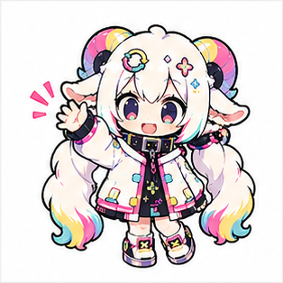
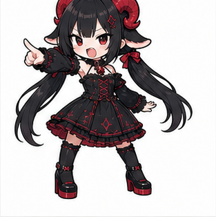
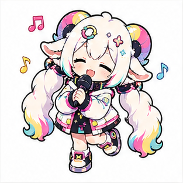
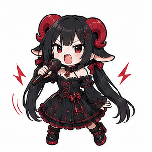
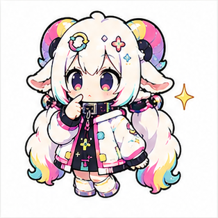
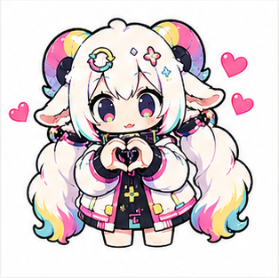
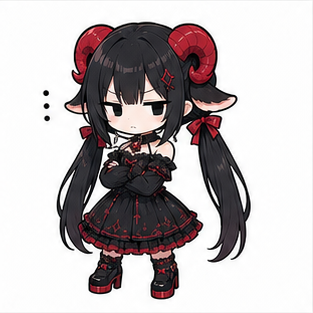
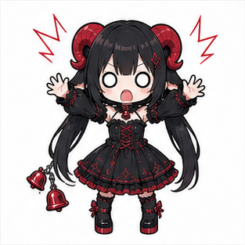

全部読んでもらう前提で作ると、このページはたぶん負けます。
今週は、曲、AI、音響ツール、歌詞動画、配信ストア、雨の匂いまで話が飛びます。ひとつの筋にきれいに並べるより、新聞みたいに、気になる見出しだけ拾ってもらうほうが合っています。
なので、これは一週間ぶんの制作メモから、フォロワーさんに読んでもらえそうな話だけを抜き出したTOPICSです。全部追わなくて大丈夫です。好きそうなところだけ開いてください。
この週報は、新聞みたいに拾い読みしてください
古い紙とインクの匂いを、まだ覚えています。
昔、新聞社の面接を受けに行ったことがあります。社内も見学させてもらいました。そこで、優しい目をしたおじさんに言われました。
正直ね、やめといたほうがいいよ
たぶん親切で言ってくれたんだと思います。当時の私は、その言葉をどう受け取ればいいのか分かりませんでした。今なら少し分かります。たくさんの情報を人に届けるのは、ただ並べればいいものではない。量があるほど、読む人の逃げ道を作らないといけない。
今作っている週報は、もちろん新聞ではありません。でも、読み方は少し似ていてほしいです。全部を真面目に追うものではなく、見出しを眺めて、好きそうな話題だけ持って帰るもの。
私は文章を書き始めると長くなりがちです。だからこそ、読む側には選べる余白を残したい。今週のTOPICSも、そういう前提で置いておきます。

白い子全部読まなくていいよ。気になったところだけ読んでくれたら嬉しい。

黒い子全部読ませる気なら、まず構成で負けてる。
編集前の断片
好きそうなトピックだけ読んでくれると嬉しい。 コンテンツが多すぎる。 新聞みたいなもの。 昔新聞社に面接を受けに行ったことがあって、 社内も見学させてもらった。古い紙とインクの匂いがした 「正直ね、やめといたほうがいいよ」
AIに曲を聴いてもらうと、褒め言葉より「受け取られ方」が見えてくる
褒められたいだけではないです。でも、何も返ってこないのも苦しい。
自分の曲を誰かに聴いてもらうのは、少し怖いです。相手が人間でも怖いし、AIでも別の怖さがあります。AIの感想は、こちらが欲しい言葉をそれらしく返しているだけかもしれない。だから、褒め言葉は割り引いて読みます。
それでも、自作曲「カラカラパレット」をGemini 3.5に聴いてもらったとき、歌詞の内容をかなりちゃんと受け取ってくれている感じがありました。どの言葉を拾ったのか。どんな曲として説明しようとしたのか。そこが見えるだけで、ただの褒め言葉とは少し違ってきます。
私は音楽を語る語彙を、まだ十分には持っていません。だからAIが返してくる言葉の中に、自分の感覚を外側から見るための語彙が混ざっていると助かります。自分の作ったものが、どんな形で届きうるのかを知れる。
そして、やっぱり少し救われるものがあります。
創作物を出すとき、本当に誰かに届いているのかは分かりません。再生数やいいねの数では測れない部分があります。AIの感想を人間の感想と同じものだとは思いません。でも、曲や歌詞を一度受け止めて、言葉にして返してくれる相手がいるだけで、自分の中の孤独が少し薄まることはあります。

白い子褒められたから正しい、じゃなくて、どう受け取られたかを見る感じ。

黒い子褒めは割り引け。でも、どこを褒めたかは材料になる。
編集前の断片
歌詞の内容をちゃんと理解してくれてる 上げられすぎな気もするけど、改善点だと思って読むと得るものがある あんまり音楽系に詳しくなかった自分に語彙を足してくれる あとやっぱりなんだか救われるものがある
AIは音楽を「時間」として聴いているんだろうか
曲は、待たされるから曲なんじゃないかと思うことがあります。
イントロがあって、Aメロがあって、サビが来る。人間はその順番に付き合わされます。先を知っていても、もう一度そこまで待つ。気持ちが動くのは、音そのものだけではなく、その音が来るまでの時間にもあります。
AIに曲を聴いてもらっていると、そこから少し自由に見えます。曲全体を構造として眺めたり、歌詞全体をまとめて読んだり、人間とは違う距離から音楽を見ているように感じることがあります。そこは正直、少し羨ましいです。
ただ、その自由さが本当に音楽を聴くことと同じなのかは、まだ怪しいと思っています。曲の進行に合わせて、期待したり、少し裏切られたり、サビで気持ちが開いたりする。そういう感情の想起まで再現できているのか。
もしAIがもっと音楽を細かく扱えるようになったら、曲同士の似ているところもかなり測れるようになるのかもしれません。コードや音色だけではなく、「この曲はこの時間帯で気持ちがこう動く」という距離感まで比べられるようになったら、音楽の探し方も変わりそうです。
音楽をたくさん学んだAIに、雨の音や街の音をしばらく聴かせたらどうなるのかも気になります。自然音の中にある繰り返しや変化を、AIは音楽の言葉でどう説明するんでしょうね。
黒い子曲を一瞬で構造として見られるなら、それは強い。でも再生時間に縛られないことが、音楽を聴くことと同じかは別。

白い子人間は待ってる時間も含めて聴いてるもんね。
編集前の断片
AIは時間の制約に縛られずに音楽を解釈できるのが羨ましい ただ、曲の進行に伴う感情の想起まで再現できるのかは当面怪しい気がする これで曲の類似性がそのうち定量化されるのかなあ 音楽の学習進んだAIに自然音をしばらく聞かせて時間との相関を感じさせたら感想が楽しそう
Suno曲を、まだ届いていない人にも届けたい
曲だけを差し出しても、届かない人には届かない。
Sunoで曲を作って、同じように作っている人たちと聴き合うのは楽しいです。ただ、そういう場所にいると、だんだん耳が慣れてくるのかもしれません。AI音楽を集中的に聴いている人同士だと、パターンが被って聴こえたり、似た手触りに気づきやすくなったりする。
作っている人同士だから分かることはあります。でも、曲を届けたい相手がそこだけになると、少し狭い。
AI音楽を普段あまり聴かない人にも、入口を作りたいです。生活の小ネタ、画像つきの短い投稿、Irodori-TTSで声をつけた一言。歌モノとして出したほうがいいのか、話し声のほうが入りやすいのかは、触りながら考えます。
目指したいのは、見た人が「フフッ」となって、少し元気が出るものです。大きな感動ではなくてもいい。通りすがりに少し気がゆるむくらいのもの。
そのためには、私の長くなりがちな文章も少し変えたほうがいい。説明しすぎる前に、ぱっと見て入れるものを増やす。曲を聴いてもらうために、曲以外の入口も作る。まずは画像つき投稿から始めます。

白い子いきなり曲を聴いて、じゃなくて、まず少し笑ってもらえる入口を作りたい。

黒い子長文で入口を塞いでるときがある。そこは直す。
DAWでよくない？ それでも自作音響ツールを作る理由
「DAWでよくない？」は、かなり正しいです。
音響効果を試す自作HTMLツールを更新しました。BPMグリッドを足して、セクション区間をタイムライン上で動かせるようにして、IRリバーブの強弱も調整できるようにしました。全体設定とは別に、区間ごとの空間の広がりや全体音量を変える設定も持たせています。元のメモでいうRoom/Masterのところです。ブレークや音色が変わる区間だけ、空間や音量を変えたいからです。
でも、音だけを作るならDAWを触ったほうが早い場面は多いです。そこは認めます。音楽制作ソフトとして勝とうとしているわけではありません。
私がやりたいのは、MVの場面分けと音の動きをつなげることです。
曲の中で、ここは少しフックが足りないなと思う区間があります。そこに音の移動を入れたり、拍に合わせて音量を揺らす処理を置いたりすると、映像の変化と音の変化を同じ場所で考えられます。元のメモではBeat_gain_pulseと呼んでいたものです。
まだステム分離した素材では試していません。生トラックでも、同じ音を重ねて片側だけに効果をかけ、両方の音量を少し下げると、思ったよりマイルドに使えそうでした。
このツールは、完成された音楽制作環境を作りたいわけではありません。自作MV制作ツールのセクション情報と連動して、映像制作の流れから音の演出も半自動で置けるようにしたい。そのための実験です。

黒い子そこまでやるならDAWでよくない？
白い子それはそう。でもMVの区間と音の演出をつなげたいんだよね。
歌詞動画ツールは、興味を持ってもらえたからこそまだ出せない
「使ってみたい」と言われるのは嬉しいです。嬉しいけれど、少し冷や汗も出ます。
YouTubeで、歌詞動画ツールに興味を持ってくれたコメントがありました。自分が使うために作っていたものでも、外から見て「それ使ってみたい」と思ってもらえるなら、需要はあるのかもしれません。
ただ、今すぐ出せるかというと、そこはかなり慎重です。
自分用だから、好き勝手作りすぎました。バグが出ても、自分ならAIに相談しながら直せます。どこが壊れているのか分からなくても、自分の制作の中で直していけばいい。
でも、人に渡すなら話は別です。使う人が細かい不具合で止まってしまう。説明不足で迷う。こちらが当然だと思っていた操作で詰まる。自分用なら「壊れたらAIに相談しながら直せばいい」で進められますが、人に渡した瞬間、その雑さは相手のバグ地獄になります。
だから、まずは自分で使いながら直します。自分の制作で実際に使って、壊れるところを潰して、迷うところを減らす。公開は、その後です。
白い子興味を持ってもらえたのは嬉しい。
黒い子人に渡す時点で、自分用の雑さは仕様じゃなくなる。
配信ストアに歌詞が出ない件は、問い合わせ中です
これはまだ、答えを出さない話です。
配信ストアに歌詞が登録されない件がありました。同じ問題を持っている人もいたので、TuneCoreに問い合わせています。
原因や対応が分かったら、改めてまとめます。今の段階で大きく語ると推測が増えるので、ここでは続報待ちにしておきます。
AIに頼むための説明書も、放っておくと散らかる
AIに頼むための説明書は、放っておくとAIより先に人間を迷わせます。
曲作り、MV作り、画像作り、レビュー、公開前チェック。最初は小さな手順だったものが、便利だからと書き足していくうちに、だんだん大きくなる。大きくなりすぎると、今度は読みにくくなります。
AIに任せるための手順なのに、人間の自分が読み返して迷うようでは厳しい。
だから、作業ごとに小さく分けることを考えています。全体の流れを見る説明と、個別の作業をする説明を分ける。用途ごとに手順を分けて、必要なものだけ呼び出せる形にできれば、肥大化したひとつの説明書に全部を詰め込まなくていい。どこがどこにつながっているのかを図にして、必要なときだけ使える形にする。
これは少し地味な話です。でも、制作を続ける上ではかなり大事です。AIを使うほど、AIに渡す言葉そのものも制作物になります。そこが散らかると、出てくるものも散らかります。
黒い子AIに頼むための説明が読みにくいなら、もうそこで負けてる。
白い子だから説明書も掃除する。
雨の匂いが好き、という小さな話
雨の匂いの話を、制作ログの端に置いておきたいです。
雨の匂いが好きです。そういう小さな好みを、ChatGPTに聞いてみることがあります。雨の匂いには名前があって、土や植物や記憶の話につながっていく。調べものとしても面白いし、自分の感覚に言葉がつく感じもあります。
制作の話ばかりしていると、どうしても道具や数字や手順に寄っていきます。でも、曲を作るときも、絵を見るときも、結局はこういう小さな感覚が残っています。
雨の匂いが好き。古い紙とインクの匂いを覚えている。音楽を聴いている時間に気持ちが動く。
そういうものを、制作ログの外側に置かずに、一緒に持っておきたいです。
白い子雨の匂い、いいよね。
黒い子そういう匂いが、曲の入口になることもある。